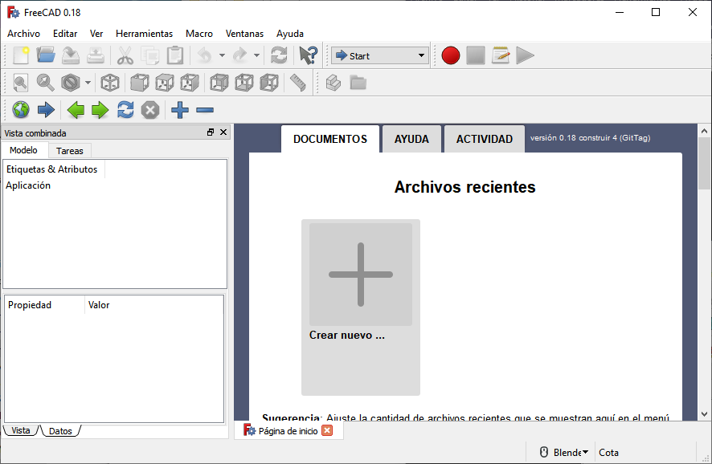
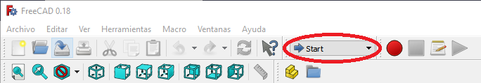
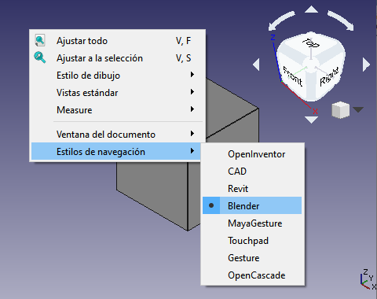
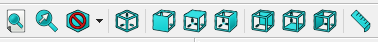

1. Introducción a FreeCAD¶
FreeCAD es un programa libre de diseño asistido por computadora (CAD). Permite diseñar objetos en tres dimensiones. Estos objetos se pueden imprimir posteriormente en una impresora 3D.
Los tutoriales que vienen a continuación están basados en los video-tutoriales que ha publicado ObiJuan (Juan González Gómez) en YouTube. La lista completa de los tutoriales de ObiJuan está en la página Videotutoriales de FreeCAD.
Ahora vamos a abrir la aplicación FreeCAD para Windows, que tiene el siguiente icono.

Una vez abierto, la ventana principal de FreeCAD es la siguiente.
A continuación hacemos clic con el ratón en el icono para crear un nuevo documento
 o bien
seleccionamos en el menú
o bien
seleccionamos en el menú Archivo... Nuevo.Se abrirá una nueva pestaña con un documento vacío, donde podemos comenzar a diseñar.
En el programa FreeCAD existen varios Bancos de Trabajo también llamados Workbench en inglés. Por defecto, al abrir un nuevo archivo se selecciona el banco de trabajo Start.
Ahora vamos a seleccionar el banco de trabajo Part para comenzar a diseñar objetos en 3 dimensiones.

Podemos ver como los iconos de la barra de herramientas han cambiado para adaptarse al nuevo banco de trabajo Part.
Haciendo clic en la barra de herramientas de objetos sólidos aparecerá en pantalla el objeto que se haya seleccionado.

Se pueden crear cubos, cilindros, esferas, conos, toros, prismas, o piezas más complejas de forma paramétrica.
Para empezar vamos a seleccionar un cubo que se verá en pantalla de la siguiente manera.

Ahora vamos a escoger el estilo de navegación para visualizar el cubo en la pantalla. Con el botón derecho del ratón seleccionamos estilo de navegación... de tipo Blender.
Para girar el cubo presionamos el botón central mientras movemos el ratón.
Para alejarnos y acercarnos haremos girar la rueda del ratón.
Para desplazar el cubo presionaremos el botón central a la vez que la letra Shift del teclado, mientras movemos el ratón.
Con la barra de herramientas de Visualización también podemos centrar el objeto en la pantalla o seleccionar la vista que deseamos visualizar.

Ejercicios¶
Abre FreeCAD y crea un nuevo documento con un cubo y un cilindro. Mueve las piezas por la pantalla y selecciona todas sus diferentes caras clicando sobre ellas.